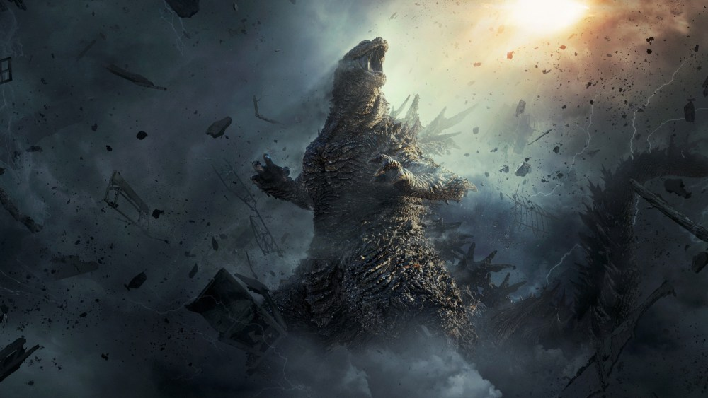
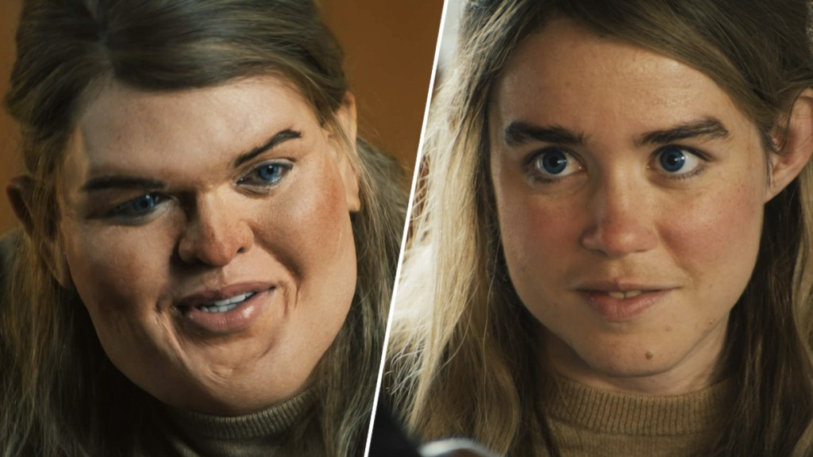
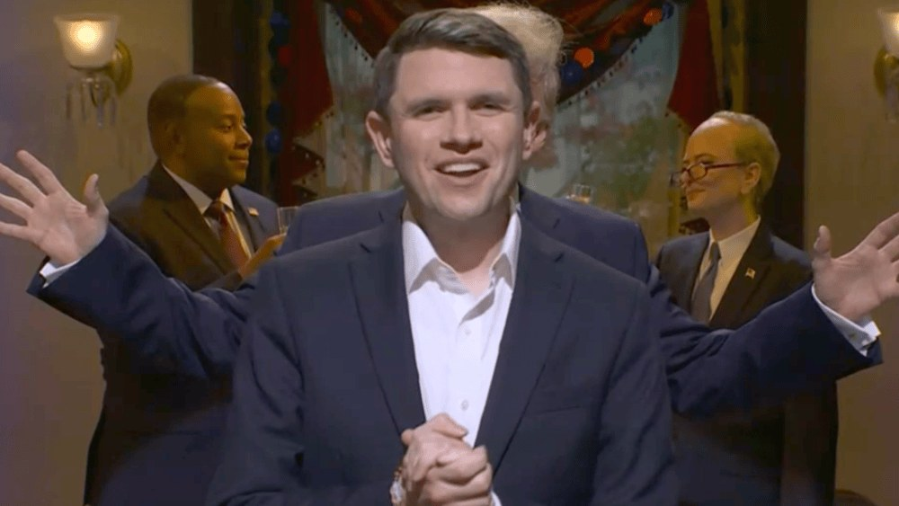
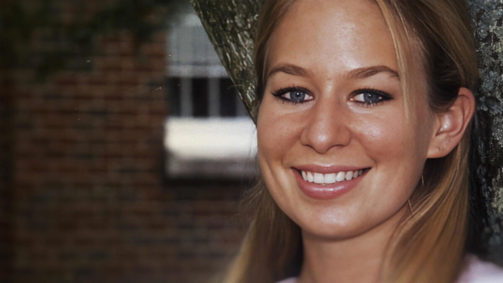

Godzilla Minus Zero sets a record with a $32M opening

Deadline’s Saturday update has Toho and GKids’ sequel taking about $32 million from 3,254 theaters after a $14.5 million Friday. That makes it the biggest opening ever for a live-action foreign-language film in North America, beating Hero’s $17.8 million, and nearly triple what Godzilla Minus One opened to in 2023. Imax and premium screens account for an unprecedented 74% of the gross, and audiences gave it an A CinemaScore.
The whole frame is roaring: Deadline sees about $114 million across all films, the best first weekend of November since the pandemic. Below Godzilla, The Cat in the Hat is heading for roughly $18 million–$20 million, and Angel Studios’ Drummer Boy is the surprise of the weekend, tracking near $8.5 million. Official Sunday estimates land later today.
Druski’s history-making SNL: Emma Stone, Elizabeth Holmes and mixed reviews

The first digital creator to host Saturday Night Live joked in his monologue that he couldn’t promise “no whiteface,” then brought out his co-star Emma Stone, who teased that he’d misread their scenes in the upcoming baseball rom-com The Catch. The night’s most talked-about bit was the pre-tape “Dru Can See Everything,” in which Druski goes full whiteface as Elizabeth Holmes (opposite Jane Wickline’s Holmes) in a spoof of the Nathan Fielder–produced documentary.
Reviews were split. Deadline called the Holmes piece one of the season’s funniest, A.V. Club named the musical “She Said Yes” the best sketch of a “middling” night, and LateNighter said the episode put Season 52’s problems in sharp relief. The Strokes played their fifth time as musical guest, with Walton Goggins on bongos.
Senator-elect James Talarico crashes the SNL cold open, and Update roasts Musk

Fresh off his Texas Senate win in Tuesday’s midterms, James Talarico walked into the post-election cold open, apologized for all the $5 donation texts and asked how many more Trump cold opens the show planned to do. James Austin Johnson’s Trump answered: “Infinity.”
Weekend Update kept the midterm theme going, with Jeremy Culhane’s unhinged Elon Musk brushing off roughly $500 million in midterm spending that didn’t pay off to ramble about the Cybertruck.
Taken: Natalee Holloway is Netflix’s No. 1 show for a fourth straight day

Netflix’s three-part docuseries follows Beth Holloway’s two-decade search for answers after her daughter vanished in Aruba in 2005, with interviews from family, investigators and journalists plus never-before-released FBI footage. It debuted at No. 1 in the U.S. on Nov. 5 and has held the top spot since. It’s also No. 1 globally today, according to What’s on Netflix.
It took the crown from The One About Matthew Perry, which is still in the top three. A scripted show hasn’t held the top spot all week, and Nobody Wants This is the best-performing series at No. 2.
Bottom of the news
- Bill Hader’s The Cat in the Hat earned an A CinemaScore and is aiming for about $18M–$20M, with Veterans Day on Wednesday expected to help.
- Anderson .Paak and Cordae’s Heavy Is the Crown debuts at No. 1 on Billboard’s Top Rap Albums, a first for both.
- Tame Impala and JENNIE’s “Dracula” climbs back to No. 5 on the Hot 100 in its 57th week; LISA’s PRESS PLAY EP debuts at No. 35 on the Billboard 200.
- Macklemore says major U.S. venues, including Madison Square Garden, refused to book his Free Palestine tour.
- Adam Driver confirms he won’t return for Lena Dunham’s five-episode Girls reboot.
- Emmy Rossum joins RAINN as an ambassador after her Hulu thriller Furious.
- Russell Brand faces sentencing Monday, and London’s police chief says more allegations are likely.